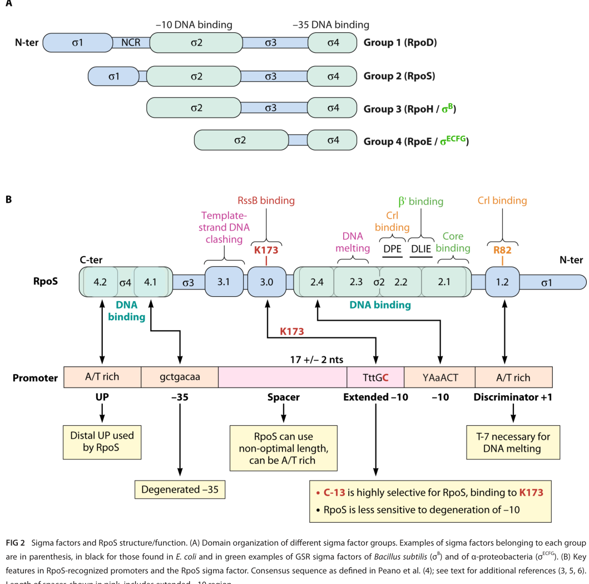

Stationary-phase sigma factor that reprograms RNA polymerase promoter specificity during carbon starvation and general stress adaptation in Pseudomonas putida KT2440. RpoS is a sigma-70 family alternative sigma factor that drives transcription initiation at stationary- and stress-associated promoters, supports starvation survival and cross-protection, and also contributes to condition-specific lifestyle outputs such as biofilm-associated c-di-GMP signaling.
Definition: A sigma factor activity that redirects bacterial RNA polymerase to promoters used during stationary phase and general stress adaptation.
Justification: GO:0016987 captures sigma factor activity broadly, but does not distinguish RpoS-like alternative sigma factors dedicated to stationary-phase and general stress transcriptional programs.
Parent term: sigma factor activity
Supporting Evidence:
| GO Term | Evidence | Action | Reason |
|---|---|---|---|
|
GO:0003677
DNA binding
|
IEA
GO_REF:0000120 |
MARK AS OVER ANNOTATED |
Summary: This term is not entirely wrong because RpoS contributes promoter recognition within RNA polymerase holoenzyme, but it is too generic and potentially misleading as a standalone molecular function. The specific core activity is sigma factor activity, which already captures promoter-specific DNA recognition more accurately.
Supporting Evidence:
file:PSEPK/rpoS/rpoS-notes.md
GO:0003677 DNA binding is too generic for a sigma factor whose core activity is promoter specificity within RNA polymerase holoenzyme rather than a standalone DNA-binding regulator.
file:PSEPK/rpoS/rpoS-deep-research-falcon.md
as a group 2 sigma factor, it binds core RNAP and recognizes promoters similar to RpoD
|
|
GO:0003700
DNA-binding transcription factor activity
|
IEA
GO_REF:0000002 |
MODIFY |
Summary: The overall idea that RpoS is a transcriptional regulatory factor is sound, but this GO term is too generic for a bacterial sigma factor. GO:0016987 sigma factor activity is the precise molecular function for the promoter-specificity subunit of RNA polymerase.
Reason: Sigma factor activity is the exact and more informative child term for RpoS.
Proposed replacements:
sigma factor activity
Supporting Evidence:
file:PSEPK/rpoS/rpoS-notes.md
GO:0016987 sigma factor activity is the precise molecular function term for RpoS and is more informative than the generic GO:0003700 DNA-binding transcription factor activity.
file:PSEPK/rpoS/rpoS-deep-research-falcon.md
RpoS does **not** catalyze a biochemical reaction and is **not** a transporter. Its primary function is **sequence-specific transcription initiation control**
|
|
GO:0005737
cytoplasm
|
IEA
GO_REF:0000120 |
ACCEPT |
Summary: This annotation is appropriate. RpoS is a bacterial sigma factor that associates with the cytoplasmic RNA polymerase core enzyme and UniProt places the protein in the cytoplasm.
Supporting Evidence:
file:PSEPK/rpoS/rpoS-uniprot.txt
CC -!- SUBCELLULAR LOCATION: Cytoplasm
file:PSEPK/rpoS/rpoS-deep-research-falcon.md
RpoS is a **cytosolic** transcription factor (sigma factor) that exerts its function by interacting with **cytosolic RNA polymerase** and promoter DNA.
|
|
GO:0006352
DNA-templated transcription initiation
|
IEA
GO_REF:0000120 |
ACCEPT |
Summary: This is a core process annotation for RpoS. Sigma factors function by redirecting RNA polymerase to specific promoters at transcription initiation, and the KT2440 mutant phenotype is consistent with a broad defect in stationary-phase transcriptional reprogramming.
Supporting Evidence:
file:PSEPK/rpoS/rpoS-deep-research-codex.md
Accept GO:0006352 DNA-templated transcription initiation as the direct process executed by RpoS-containing holoenzyme.
file:PSEPK/rpoS/rpoS-uniprot.txt
CC -!- FUNCTION: Sigma factors are initiation factors that promote the attachment of RNA polymerase to specific initiation sites and are then released.
file:PSEPK/rpoS/rpoS-deep-research-falcon.md
RpoS does **not** catalyze a biochemical reaction and is **not** a transporter. Its primary function is **sequence-specific transcription initiation control**
|
|
GO:0006355
regulation of DNA-templated transcription
|
IEA
GO_REF:0000120 |
MODIFY |
Summary: RpoS certainly regulates transcription, but this term is broader than necessary. The more specific BP term already present in the GOA set is regulation of DNA-templated transcription initiation, which better reflects how sigma factors act.
Reason: Replace the broad regulation term with the initiation-specific child term.
Proposed replacements:
regulation of DNA-templated transcription initiation
Supporting Evidence:
file:PSEPK/rpoS/rpoS-notes.md
GO:0006352 DNA-templated transcription initiation and GO:2000142 regulation of DNA-templated transcription initiation capture the direct process-level role better than GO:0006355 regulation of DNA-templated transcription or GO:0010468 regulation of gene expression.
file:PSEPK/rpoS/rpoS-deep-research-falcon.md
as a group 2 sigma factor, it binds core RNAP and recognizes promoters similar to RpoD
|
|
GO:0010468
regulation of gene expression
|
IEA
GO_REF:0000104 |
MODIFY |
Summary: This annotation is directionally correct but far too general. For RpoS, the relevant direct process is regulation of transcription initiation by alternative sigma factor-dependent promoter selection.
Reason: GO:2000142 gives the correct level of specificity for RpoS.
Proposed replacements:
regulation of DNA-templated transcription initiation
Supporting Evidence:
file:PSEPK/rpoS/rpoS-notes.md
GO:0006352 DNA-templated transcription initiation and GO:2000142 regulation of DNA-templated transcription initiation capture the direct process-level role better than GO:0006355 regulation of DNA-templated transcription or GO:0010468 regulation of gene expression.
|
|
GO:0016987
sigma factor activity
|
IEA
GO_REF:0000120 |
ACCEPT |
Summary: This is the most precise core molecular function for RpoS. It captures the promoter-specificity role of the alternative sigma subunit within RNA polymerase holoenzyme and is directly supported by UniProt and the experimental literature on stationary-phase regulation.
Supporting Evidence:
file:PSEPK/rpoS/rpoS-notes.md
GO:0016987 sigma factor activity is the precise molecular function term for RpoS and is more informative than the generic GO:0003700 DNA-binding transcription factor activity.
file:PSEPK/rpoS/rpoS-uniprot.txt
CC -!- SIMILARITY: Belongs to the sigma-70 factor family. RpoS subfamily.
file:PSEPK/rpoS/rpoS-deep-research-falcon.md
RpoS is an alternative sigma factor** (sigma-70 family; “group 2” sigma) that binds the **core RNA polymerase** and redirects transcription to a broad set of promoters that support survival during **stationary phase** and diverse stresses—commonly termed the **general stress response (GSR)**
|
|
GO:2000142
regulation of DNA-templated transcription initiation
|
IEA
GO_REF:0000108 |
ACCEPT |
Summary: This is the best specific biological-process term among the seeded GOA set. RpoS changes promoter recognition by RNA polymerase and thereby regulates transcription specifically at the initiation step.
Supporting Evidence:
file:PSEPK/rpoS/rpoS-deep-research-codex.md
Accept GO:2000142 regulation of DNA-templated transcription initiation as the best specific regulatory BP term already present.
file:PSEPK/rpoS/rpoS-deep-research-falcon.md
A central concept is **sigma competition**: RpoS competes with the housekeeping sigma **RpoD (σ70)** and other alternative sigmas for a limiting pool of core RNAP.
|
|
GO:0042594
response to starvation
|
IMP
file:PSEPK/rpoS/rpoS-notes.md |
NEW |
Summary: The original KT2440 rpoS mutant phenotype directly supports involvement in starvation response. Loss of rpoS reduced survival during carbon starvation, making this a well-supported downstream biological process for the gene.
Reason: This term captures the hallmark stationary-phase and starvation phenotype that is not represented in the seeded GOA set.
Supporting Evidence:
file:PSEPK/rpoS/rpoS-notes.md
In KT2440, the rpoS mutant showed reduced survival of carbon starvation and reduced cross-protection against other types of stress in cells starved for carbon, and RpoS controlled expression of more than 50 peptides after short carbon starvation.
file:PSEPK/rpoS/rpoS-deep-research-falcon.md
RpoS-dependent regulons typically include genes that increase tolerance to oxidative stress, osmotic stress, temperature and pH extremes, and other stationary-phase threats.
|
|
GO:0006950
response to stress
|
IMP
file:PSEPK/rpoS/rpoS-notes.md |
NEW |
Summary: RpoS is the master transcriptional regulator of the bacterial general stress response, and in KT2440 its loss reduces cross-protection against multiple stresses in starved cells. This general stress response role is the defining function of RpoS-subfamily sigma factors and complements the more specific response to starvation annotation. Treated as a core downstream process driven by RpoS-dependent promoter reprogramming.
Reason: The general stress response is the canonical RpoS function (master regulator of the stationary phase and general stress response) and is not represented in the seeded GOA set.
Supporting Evidence:
file:PSEPK/rpoS/rpoS-uniprot.txt
This sigma factor is the master transcriptional regulator of the stationary phase and the general stress response.
file:PSEPK/rpoS/rpoS-deep-research-falcon.md
RpoS-dependent regulons typically include genes that increase tolerance to oxidative stress, osmotic stress, temperature and pH extremes, and other stationary-phase threats.
|
|
GO:0042710
biofilm formation
|
IMP
file:PSEPK/rpoS/rpoS-notes.md |
NEW |
Summary: Multiple studies place RpoS upstream of biofilm-associated pathways in P. putida, and one recent paper showed direct binding of RpoS to the major wspA promoter with a requirement for tetracycline-induced biofilm formation. This is a justified new annotation, but it should be viewed as a conditional, non-core output of the broader RpoS regulon.
Reason: The seeded GOA set misses a recurrent and directly supported RpoS-dependent lifestyle phenotype.
Supporting Evidence:
file:PSEPK/rpoS/rpoS-notes.md
RpoS directly bound the major wspA promoter and was required for tetracycline to induce wspA activity and promote biofilm formation.
file:PSEPK/rpoS/rpoS-notes.md
Expression of cfcR is transcriptionally regulated by RpoS, and cfcR provides most free c-di-GMP during stationary phase in static conditions.
file:PSEPK/rpoS/rpoS-deep-research-falcon.md
lapF transcription is described as dependent on RpoS in KT2440 biofilm literature
|
Q: Which promoters constitute the direct core RpoS regulon in KT2440 during carbon starvation versus antibiotic stress?
Q: How broadly conserved is the direct RpoS control of biofilm genes such as wspA, cfcR, lapA, and lapF across environmental conditions relevant to soil and rhizosphere lifestyles?
Q: Which post-transcriptional regulators beyond PsrA most strongly tune RpoS abundance and activity in KT2440?
Experiment: Perform paired RNA-seq and ChIP-seq or ChIP-exo in wild-type and delta-rpoS cells during exponential growth, early carbon starvation, and stationary phase to separate direct promoter targets from indirect downstream effects.
Hypothesis: The direct KT2440 RpoS regulon during starvation is smaller than the full set of downstream stationary-phase phenotypes.
Type: transcriptomics and DNA-binding profiling
Experiment: Measure biofilm formation, c-di-GMP levels, and promoter activity of wspA, cfcR, lapA, and lapF in wild-type, delta-rpoS, and complemented strains under carbon limitation, tetracycline stress, and rhizosphere-mimicking conditions.
Hypothesis: RpoS-dependent biofilm phenotypes arise from a condition-specific promoter subset rather than a universal biofilm program.
Type: targeted genetics and reporter assays
Experiment: Combine translational rpoS reporter fusions with psrA, hfq, and polyphosphate-pathway perturbations to quantify how transcriptional versus post-transcriptional inputs shape RpoS accumulation across the growth curve.
Hypothesis: Upstream regulators such as PsrA and post-transcriptional factors control RpoS at distinct stages of growth-phase transition.
Type: reporter fusion analysis
Exported on March 22, 2026 at 03:00 AM
Organism: Pseudomonas putida
Sequence:
MALSKEVPEFDIDDDVLLMETGIVLETDVVSDEPAVSSVRTRAKSGSSLKQHKYIDYSRALDATQLYLNEIGFSPLLSPEEEVHFARLSQKGDPAGRKRMIESNLRLVVKIARRYVNRGLSLLDLIEEGNLGLIRAVEKFDPERGFRFSTYATWWIRQTIERAIMNQTRTIRLPIHVVKELNVYLRAARELTQKLDHEPSPEEIATLLEKPVAEVKRMLGLNERVSSVDVSLGPDSDKTLLDTLTDDRPTDPCELLQDDDLSQSIDQWLGELTDKQREVVVRRFGLRGHESSTLEDVGLEIGLTRERVRQIQVEGLKRLREILEKNGLSSESLFQ
I begin with the InterPro architecture, which is diagnostic for a sigma-70-type initiation factor. The N-terminal half is anchored by IPR012761 (RNA polymerase sigma factor RpoS family, residues 2–334), establishing the overall identity as an RpoS-like sigma factor. Within this scaffold, the early module IPR009042 (RNA polymerase sigma-70 region 1.2, residues 62–95) precedes a well-defined central core comprising IPR013325 (sigma factor, region 2 homologous superfamily, residues 62–170) and IPR007627 (sigma-70 region 2, residues 100–169). This arrangement produces the canonical region 2 fold that grips the non-template strand and stabilizes open-complex formation at promoters. The C-terminal half is dominated by IPR013324 (sigma factor, region 3/4-like homologous superfamily, residues 173–328) and IPR036388 (winged helix-like DNA-binding domain superfamily, residues 173–325), which together form the promoter-recognition and DNA-binding apparatus. This is followed by IPR007624 (sigma-70 region 3, residues 180–254) and IPR007630 (sigma-70 region 4, residues 268–321), completing the assembly that recognizes the −10 and −35 elements and anchors to the RNA polymerase core. The overall sigma-70 architecture is reinforced by broader family signatures IPR050239 (Sigma-70 factor family, residues 96–329) and IPR014284 (RNA polymerase sigma-70-like domain, residues 97–323), with the core catalytic/recognition block IPR000943 (RNA polymerase sigma-70, residues 124–319). The ordered layout—region 1.2 → region 2 → region 3 → region 4—causes selective promoter binding and initiation control rather than catalysis, which is characteristic of sigma factors.
This domain architecture dictates the molecular function as a transcription initiation factor that confers promoter specificity to the bacterial RNA polymerase holoenzyme. The presence of the winged helix-like superfamily and the discrete region 2/3/4 modules supports DNA engagement and recognition; thus the activity aligns with GO:0003700 sigma factor activity. The absence of enzymatic motifs and the presence of multiple promoter-recognition domains emphasize a role in assembly and regulation of the initiation complex.
From this molecular function, the biological process follows: sigma-70-type factors nucleate open-complex formation and trigger transcript start-site selection, which is the essence of transcription initiation. Therefore, the process is transcription initiation within the bacterial-type RNA polymerase system; this maps to DNA-templated transcription initiation and, more specifically for bacteria, the initiation arm of transcription.
The cellular context is bacterial and soluble. Sigma factors operate with the cytosolic RNA polymerase and diffuse to promoter sites on the nucleoid. The soluble, non-membranous architecture and lack of transmembrane segments place the protein in the cytoplasm, consistent with assembly and action of transcription complexes.
Mechanistically, region 1.2 primes holoenzyme assembly and promoter escape, region 2 stabilizes DNA melting at −10 elements, region 3 recognizes the −10/−35 platform and modulates start-site fidelity, and region 4 binds the -35 element and interfaces with the polymerase clamp/funnel. This architecture causes selective initiation at stress- and stationary-phase–type promoters, consistent with an RpoS-like program. I hypothesize preferential interaction with the core RNA polymerase subunits (RpoA, RpoB, RpoC), the primary sigma partner (RpoZ/stable A200) in holoenzyme formation, and transient contacts with nucleoid-associated factors that modulate promoter accessibility. Together, these interactions would tune initiation pathways toward adaptive transcriptional regimes in Pseudomonas putida.
A soluble bacterial transcription initiation factor that confers promoter specificity to the core RNA polymerase. It uses a modular sigma-70 architecture to bind and recognize −10 and −35 promoter elements, assemble the holoenzyme, and trigger open-complex formation that commits RNA polymerase to productive transcription initiation. Operating with cytosolic polymerase and engaging DNA within the nucleoid, it likely biases initiation toward adaptive gene programs characteristic of stress-responsive and stationary-phase regulation.
Sigma factors are initiation factors that promote the attachment of RNA polymerase to specific initiation sites and are then released.
IPR012761, family) — residues 2-334IPR009042, domain) — residues 62-95IPR013325, homologous_superfamily) — residues 62-170IPR050239, family) — residues 96-329IPR014284, domain) — residues 97-323IPR007627, domain) — residues 100-169IPR000943, domain) — residues 124-319IPR013324, homologous_superfamily) — residues 173-328IPR036388, homologous_superfamily) — residues 173-325IPR007624, domain) — residues 180-254IPR007630, domain) — residues 268-321Molecular Function: molecular_function (GO:0003674), binding (GO:0005488), transcription regulator activity (GO:0140110), organic cyclic compound binding (GO:0097159), heterocyclic compound binding (GO:1901363), sigma factor activity (GO:0003700), nucleic acid binding (GO:0003676), DNA-binding transcription activator activity (GO:0001216), DNA binding (GO:0003677), transcription regulatory region nucleic acid binding (GO:0001067), double-stranded DNA binding (GO:0003690), sequence-specific DNA binding (GO:0043565), transcription cis-regulatory region binding (GO:0000976), sequence-specific double-stranded DNA binding (GO:1990837)
Biological Process: biological_process (GO:0008150), biological regulation (GO:0065007), positive regulation of biological process (GO:0048518), regulation of biological process (GO:0050789), negative regulation of biological process (GO:0048519), positive regulation of response to stimulus (GO:0048584), regulation of metabolic process (GO:0019222), positive regulation of locomotion (GO:0040017), regulation of cellular process (GO:0050794), regulation of response to stimulus (GO:0048583), regulation of locomotion (GO:0040012), negative regulation of metabolic process (GO:0009892), positive regulation of cellular process (GO:0048522), positive regulation of response to external stimulus (GO:0032103), regulation of cell motility (GO:2000145), regulation of chemotaxis (GO:0050920), regulation of response to stress (GO:0080134), regulation of biosynthetic process (GO:0009889), regulation of nitrogen compound metabolic process (GO:0051171), regulation of macromolecule metabolic process (GO:0060255), regulation of response to external stimulus (GO:0032101), regulation of cellular metabolic process (GO:0031323), negative regulation of biosynthetic process (GO:0009890), regulation of primary metabolic process (GO:0080090), positive regulation of chemotaxis (GO:0050921), positive regulation of cell motility (GO:2000147), regulation of defense response (GO:0031347), regulation of inflammatory response (GO:0050727), regulation of macromolecule biosynthetic process (GO:0010556), regulation of cellular biosynthetic process (GO:0031326), regulation of nucleobase-containing compound metabolic process (GO:0019219), positive regulation of cell migration (GO:0030335), negative regulation of macromolecule biosynthetic process (GO:0010558), negative regulation of cellular biosynthetic process (GO:0031327), regulation of RNA metabolic process (GO:0051252), regulation of cell migration (GO:0030334), negative regulation of RNA metabolic process (GO:0051253), negative regulation of nucleobase-containing compound metabolic process (GO:0045934), regulation of gene expression (GO:0010468), regulation of RNA biosynthetic process (GO:2001141), negative regulation of RNA biosynthetic process (GO:1902679), regulation of DNA-templated transcription (GO:0006355), negative regulation of nucleic acid-templated transcription (GO:1903507), regulation of nucleic acid-templated transcription (GO:1903506), negative regulation of DNA-templated transcription (GO:0045892)
Cellular Component: cellular_component (GO:0005575), protein-containing complex (GO:0032991), transcription regulator complex (GO:0005667)
Generated by BioReason
Exported on March 22, 2026 at 03:00 AM
Organism: Pseudomonas putida
Sequence:
MALSKEVPEFDIDDDVLLMETGIVLETDVVSDEPAVSSVRTRAKSGSSLKQHKYIDYSRALDATQLYLNEIGFSPLLSPEEEVHFARLSQKGDPAGRKRMIESNLRLVVKIARRYVNRGLSLLDLIEEGNLGLIRAVEKFDPERGFRFSTYATWWIRQTIERAIMNQTRTIRLPIHVVKELNVYLRAARELTQKLDHEPSPEEIATLLEKPVAEVKRMLGLNERVSSVDVSLGPDSDKTLLDTLTDDRPTDPCELLQDDDLSQSIDQWLGELTDKQREVVVRRFGLRGHESSTLEDVGLEIGLTRERVRQIQVEGLKRLREILEKNGLSSESLFQ
I begin with the InterPro architecture, which is diagnostic for a sigma-70-type initiation factor. The N-terminal half is anchored by IPR012761 (RNA polymerase sigma factor RpoS family, residues 2–334), establishing the overall identity as an RpoS-like sigma factor. Within this scaffold, the early module IPR009042 (RNA polymerase sigma-70 region 1.2, residues 62–95) precedes a well-defined central core comprising IPR013325 (sigma factor, region 2 homologous superfamily, residues 62–170) and IPR007627 (sigma-70 region 2, residues 100–169). This arrangement produces the canonical region 2 fold that grips the non-template strand and stabilizes open-complex formation at promoters. The C-terminal half is dominated by IPR013324 (sigma factor, region 3/4-like homologous superfamily, residues 173–328) and IPR036388 (winged helix-like DNA-binding domain superfamily, residues 173–325), which together form the promoter-recognition and DNA-binding apparatus. This is followed by IPR007624 (sigma-70 region 3, residues 180–254) and IPR007630 (sigma-70 region 4, residues 268–321), completing the assembly that recognizes the −10 and −35 elements and anchors to the RNA polymerase core. The overall sigma-70 architecture is reinforced by broader family signatures IPR050239 (Sigma-70 factor family, residues 96–329) and IPR014284 (RNA polymerase sigma-70-like domain, residues 97–323), with the core catalytic/recognition block IPR000943 (RNA polymerase sigma-70, residues 124–319). The ordered layout—region 1.2 → region 2 → region 3 → region 4—causes selective promoter binding and initiation control rather than catalysis, which is characteristic of sigma factors.
This domain architecture dictates the molecular function as a transcription initiation factor that confers promoter specificity to the bacterial RNA polymerase holoenzyme. The presence of the winged helix-like superfamily and the discrete region 2/3/4 modules supports DNA engagement and recognition; thus the activity aligns with GO:0003700 sigma factor activity. The absence of enzymatic motifs and the presence of multiple promoter-recognition domains emphasize a role in assembly and regulation of the initiation complex.
From this molecular function, the biological process follows: sigma-70-type factors nucleate open-complex formation and trigger transcript start-site selection, which is the essence of transcription initiation. Therefore, the process is transcription initiation within the bacterial-type RNA polymerase system; this maps to DNA-templated transcription initiation and, more specifically for bacteria, the initiation arm of transcription.
The cellular context is bacterial and soluble. Sigma factors operate with the cytosolic RNA polymerase and diffuse to promoter sites on the nucleoid. The soluble, non-membranous architecture and lack of transmembrane segments place the protein in the cytoplasm, consistent with assembly and action of transcription complexes.
Mechanistically, region 1.2 primes holoenzyme assembly and promoter escape, region 2 stabilizes DNA melting at −10 elements, region 3 recognizes the −10/−35 platform and modulates start-site fidelity, and region 4 binds the -35 element and interfaces with the polymerase clamp/funnel. This architecture causes selective initiation at stress- and stationary-phase–type promoters, consistent with an RpoS-like program. I hypothesize preferential interaction with the core RNA polymerase subunits (RpoA, RpoB, RpoC), the primary sigma partner (RpoZ/stable A200) in holoenzyme formation, and transient contacts with nucleoid-associated factors that modulate promoter accessibility. Together, these interactions would tune initiation pathways toward adaptive transcriptional regimes in Pseudomonas putida.
A soluble bacterial transcription initiation factor that confers promoter specificity to the core RNA polymerase. It uses a modular sigma-70 architecture to bind and recognize −10 and −35 promoter elements, assemble the holoenzyme, and trigger open-complex formation that commits RNA polymerase to productive transcription initiation. Operating with cytosolic polymerase and engaging DNA within the nucleoid, it likely biases initiation toward adaptive gene programs characteristic of stress-responsive and stationary-phase regulation.
Sigma factors are initiation factors that promote the attachment of RNA polymerase to specific initiation sites and are then released.
IPR012761, family) — residues 2-334IPR009042, domain) — residues 62-95IPR013325, homologous_superfamily) — residues 62-170IPR050239, family) — residues 96-329IPR014284, domain) — residues 97-323IPR007627, domain) — residues 100-169IPR000943, domain) — residues 124-319IPR013324, homologous_superfamily) — residues 173-328IPR036388, homologous_superfamily) — residues 173-325IPR007624, domain) — residues 180-254IPR007630, domain) — residues 268-321Molecular Function: molecular_function (GO:0003674), binding (GO:0005488), transcription regulator activity (GO:0140110), organic cyclic compound binding (GO:0097159), heterocyclic compound binding (GO:1901363), sigma factor activity (GO:0003700), nucleic acid binding (GO:0003676), DNA-binding transcription activator activity (GO:0001216), DNA binding (GO:0003677), transcription regulatory region nucleic acid binding (GO:0001067), double-stranded DNA binding (GO:0003690), sequence-specific DNA binding (GO:0043565), transcription cis-regulatory region binding (GO:0000976), sequence-specific double-stranded DNA binding (GO:1990837)
Biological Process: biological_process (GO:0008150), biological regulation (GO:0065007), positive regulation of biological process (GO:0048518), regulation of biological process (GO:0050789), negative regulation of biological process (GO:0048519), positive regulation of response to stimulus (GO:0048584), regulation of metabolic process (GO:0019222), positive regulation of locomotion (GO:0040017), regulation of cellular process (GO:0050794), regulation of response to stimulus (GO:0048583), regulation of locomotion (GO:0040012), negative regulation of metabolic process (GO:0009892), positive regulation of cellular process (GO:0048522), positive regulation of response to external stimulus (GO:0032103), regulation of cell motility (GO:2000145), regulation of chemotaxis (GO:0050920), regulation of response to stress (GO:0080134), regulation of biosynthetic process (GO:0009889), regulation of nitrogen compound metabolic process (GO:0051171), regulation of macromolecule metabolic process (GO:0060255), regulation of response to external stimulus (GO:0032101), regulation of cellular metabolic process (GO:0031323), negative regulation of biosynthetic process (GO:0009890), regulation of primary metabolic process (GO:0080090), positive regulation of chemotaxis (GO:0050921), positive regulation of cell motility (GO:2000147), regulation of defense response (GO:0031347), regulation of inflammatory response (GO:0050727), regulation of macromolecule biosynthetic process (GO:0010556), regulation of cellular biosynthetic process (GO:0031326), regulation of nucleobase-containing compound metabolic process (GO:0019219), positive regulation of cell migration (GO:0030335), negative regulation of macromolecule biosynthetic process (GO:0010558), negative regulation of cellular biosynthetic process (GO:0031327), regulation of RNA metabolic process (GO:0051252), regulation of cell migration (GO:0030334), negative regulation of RNA metabolic process (GO:0051253), negative regulation of nucleobase-containing compound metabolic process (GO:0045934), regulation of gene expression (GO:0010468), regulation of RNA biosynthetic process (GO:2001141), negative regulation of RNA biosynthetic process (GO:1902679), regulation of DNA-templated transcription (GO:0006355), negative regulation of nucleic acid-templated transcription (GO:1903507), regulation of nucleic acid-templated transcription (GO:1903506), negative regulation of DNA-templated transcription (GO:0045892)
Cellular Component: cellular_component (GO:0005575), protein-containing complex (GO:0032991), transcription regulator complex (GO:0005667)
Generated by BioReason
rpoS encodes the stationary-phase sigma factor RpoS (Sigma S, Sigma-38), an alternative sigma-70 family subunit that redirects RNA polymerase to promoters used during stationary phase and stress adaptation. In P. putida KT2440, the direct experimental core is not an enzymatic stress-defense activity, but promoter-specific transcription initiation and global transcriptional reprogramming during carbon starvation and related stress conditions. [PMID:9642197 Cloning, sequencing, and phenotypic characterization of the rpoS gene from Pseudomonas putida KT2440., "reduced survival of carbon starvation" and "controls the expression of more than 50 peptides"] [file:PSEPK/rpoS/rpoS-uniprot.txt]
The defining KT2440 paper showed that loss of rpoS reduced survival during carbon starvation, weakened starvation-associated cross-protection, and altered the stationary/starvation proteome. This supports the view that the core GO curation should center on sigma factor activity, DNA-templated transcription initiation, and regulation of transcription initiation during starvation-associated stress adaptation. [PMID:9642197 Cloning, sequencing, and phenotypic characterization of the rpoS gene from Pseudomonas putida KT2440., "reduced survival of carbon starvation and reduced cross-protection against other types of stress in cells starved for carbon" and "controls the expression of more than 50 peptides"]
UniProt is consistent with this assignment, describing Q88ME8 as RNA polymerase sigma factor RpoS, placing it in the sigma-70 family RpoS subfamily, and localizing it to the cytoplasm. [file:PSEPK/rpoS/rpoS-uniprot.txt]
Two early Pseudomonas studies established PsrA as a direct upstream regulator. First, psrA mutants showed a 90% decrease in rpoS promoter activity and lost stationary-phase induction of rpoS. Second, PsrA was shown to bind directly to the rpoS promoter from positions -59 to -35. These papers matter for review because they confirm that rpoS is embedded in a dedicated regulatory cascade rather than acting as a constitutive housekeeping sigma factor. [PMID:11371535 Regulation of rpoS gene expression in Pseudomonas: involvement of a TetR family regulator., "showed a 90% decrease in rpoS promoter activity" and "lost the ability to induce rpoS expression at stationary phase"] [PMID:11914368 TetR family member psrA directly binds the Pseudomonas rpoS and psrA promoters., "PsrA binds from positions -59 to -35 in the rpoS promoter"]
Recent work expands the downstream RpoS regulon into surface-associated lifestyles. Under tetracycline stress, RpoS directly bound the major wspA promoter and was required for tetracycline-induced biofilm formation. Independent studies also place RpoS upstream of cfcR and parts of the lapA/lapF adhesin program, linking RpoS to c-di-GMP signaling and biofilm maturation. These are biologically real functions, but they are best treated as conditional or pleiotropic outputs rather than the single core function of RpoS. [PMID:39589111 Tetracycline induces wsp operon expression to promote biofilm formation in Pseudomonas putida., "RpoS directly bound to PwspA" and "RpoS was required for tetracycline to induce PwspA activity and promote biofilm formation"] [PMID:28677348 The Pseudomonas putida CsrA/RsmA homologues negatively affect c-di-GMP pools and biofilm formation through the GGDEF/EAL response regulator CfcR., "Expression of cfcR ... is transcriptionally regulated by RpoS"] [PMID:28945818 The promoter region of lapA and its transcriptional regulation by Fis in Pseudomonas putida., "three of which display moderate RpoS-dependence"] [PMID:24488315 Roles of cyclic Di-GMP and the Gac system in transcriptional control of the genes coding for the Pseudomonas putida adhesins LapA and LapF., "lapF transcription was previously shown to take place at late times of growth and to respond to the stationary-phase sigma factor RpoS"]
The research report should be a detailed narrative explaining the function, biological processes, and localization of the gene product. Citations should be given for all claims.
You should prioritize authoritative reviews and primary scientific literature when conducting research. You can supplement
this with annotations you find in gene/protein databases, but these can be outdated or inaccurate.
We are specifically interested in the primary function of the gene - for enzymes, what reaction is catalyzed, and what is the substrate specificity? For transporters, what is the substrate? For structural proteins or adapters, what is the broader structural role? For signaling molecules, what is the role in the pathway.
We are interested in where in or outside the cell the gene product carries out its function.
We are also interested in the signaling or biochemical pathways in which the gene functions. We are less interested in broad pleiotropic effects, except where these elucidate the precise role.
Include evidence where possible. We are interested in both experimental evidence as well as inference from structure, evolution, or bioinformatic analysis. Precise studies should be prioritized over high-throughput, where available.
The UniProt entry Q88ME8 corresponds to RpoS (sigma S / sigma-38) in Pseudomonas putida strain KT2440 (ordered locus PP_1623). Independent KT2440-specific studies explicitly refer to RpoS as the “stationary-phase sigma factor” and map it to KT2440 regulatory phenotypes, matching the requested target and avoiding confusion with rpoS homologs in other bacteria. (huertasrosales2021genomewideanalysisof pages 9-11, liu2017influenceof(p)ppgpp pages 11-15)
RpoS is an alternative sigma factor (sigma-70 family; “group 2” sigma) that binds the core RNA polymerase and redirects transcription to a broad set of promoters that support survival during stationary phase and diverse stresses—commonly termed the general stress response (GSR) in γ-proteobacteria. (bouillet2024rposandthe pages 1-5)
At the mechanistic level, sigma factors contain domains that recognize promoter elements: σ2 and σ4 interact with the −10 and −35 promoter regions; group-1 and group-2 sigma factors also include σ3, which links promoter-recognition functions. This is summarized visually in Bouillet et al. (2024) Figure 2. (bouillet2024rposandthe media f4434c02)
RpoS does not catalyze a biochemical reaction and is not a transporter. Its primary function is sequence-specific transcription initiation control by:
1) associating with core RNAP, and
2) increasing transcription from a specific class of promoters (often similar to σ70/RpoD promoters), thereby reprogramming gene expression toward stress protection. (bouillet2024rposandthe pages 1-5, bouillet2024rposandthe media f4434c02)
A central concept is sigma competition: RpoS competes with the housekeeping sigma RpoD (σ70) and other alternative sigmas for a limiting pool of core RNAP. Increased RpoS generally increases stress resistance but can reduce growth performance—framed as a “growth vs. survival” (SPANC) tradeoff in the RpoS literature. (bouillet2024rposandthe pages 5-7)
In the best-characterized paradigm (E. coli), RpoS induction during nutrient limitation/stress occurs largely through activation of rpoS translation and inhibition of RpoS proteolysis, rather than transcription alone. This reflects a multi-input “signal integration” architecture for GSR activation. (bouillet2024rposandthe pages 1-5)
Although these details are best established in E. coli, they provide strong conserved context for interpreting pseudomonad RpoS systems because RpoS is broadly conserved across many γ-proteobacteria. (bouillet2024rposandthe pages 1-5)
In P. putida KT2440, Huertas-Rosales et al. (2021) provide direct biochemical evidence that RsmA binds rpoS (PP_1623) mRNA: binding of RsmA to an RNA fragment containing the ribosome-binding site and start codon of rpoS was confirmed by EMSA. This supports a model where the Gac/Rsm post-transcriptional network can modulate RpoS levels through translation control. (huertasrosales2021genomewideanalysisof pages 9-11)
A KT2440 study of the stringent response showed that deleting (p)ppGpp synthases (relA and relA/spoT) alters biofilm programs and is accompanied by lowered rpoS expression/activity and downstream changes in RpoS-linked outputs (e.g., lapF). The work used rpoS::lacZ promoter fusions, alongside lapA/lapF reporters and qRT-PCR, placing RpoS downstream of (p)ppGpp-mediated physiology in KT2440 biofilm regulation. (liu2017influenceof(p)ppgpp pages 26-31, liu2017influenceof(p)ppgpp pages 11-15)
RpoS is a cytosolic transcription factor (sigma factor) that exerts its function by interacting with cytosolic RNA polymerase and promoter DNA. This is consistent with its sigma-factor domain organization and RNAP-binding mechanism. No membrane localization or secretion is implied by the sigma-factor structural model. (bouillet2024rposandthe pages 1-5, bouillet2024rposandthe media f4434c02)
RpoS-dependent regulons typically include genes that increase tolerance to oxidative stress, osmotic stress, temperature and pH extremes, and other stationary-phase threats. Bouillet et al. (2024) summarizes classical protective categories and illustrates that RpoS controls broad stress-protective pathways in γ-proteobacteria. (bouillet2024rposandthe pages 1-5)
A well-supported KT2440-specific function is RpoS control of biofilm maturation via matrix components:
This supports an interpretation that RpoS helps drive a stationary-phase biofilm/ECM program in KT2440, coordinating adhesins and EPS production. (liu2017influenceof(p)ppgpp pages 11-15)
Multiple KT2440 studies connect RpoS to c-di-GMP-controlled lifestyle shifts via CfcR, a diguanylate cyclase/response regulator important for stationary-phase c-di-GMP levels:
Together, these data define a KT2440-specific pathway-level role: RpoS integrates nutrient/stress state into multicellular lifestyle output via ECM genes and the c-di-GMP system. (barrientosmoreno2022roleofthe pages 1-2, huertasrosales2021genomewideanalysisof pages 9-11, barrientosmoreno2020arginineasan pages 11-12)
Bernal et al. (2023) show that the K1 type VI secretion system (T6SS) is induced in stationary phase in KT2440, but its transcription is not dependent on RpoS and is indirectly repressed by RpoS. This cautions against assuming that stationary-phase induction implies direct RpoS positive control and highlights that RpoS can act as an indirect repressor in specific contexts. (bernal2023transcriptionalorganizationand pages 1-2)
Bouillet et al. (MMBR, March 2024, https://doi.org/10.1128/mmbr.00151-22) synthesizes “new advances” in how stresses induce RpoS and summarizes approaches used to define RpoS-dependent genes/pathways. Key modern themes relevant for annotation and engineering include: multi-layer control (translation/proteolysis), sigma competition, and heterogeneous regulon outputs. (bouillet2024rposandthe pages 1-5)
The paper’s Figure 2 is a useful up-to-date schematic reference for sigma-factor domain organization and promoter recognition principles that underpin functional inference for Q88ME8. (bouillet2024rposandthe media f4434c02)
Bernal et al. (Microbiology, Jan 2023, https://doi.org/10.1099/mic.0.001295) delineates a regulatory network for K1-T6SS, important because KT2440 T6SS contributes to outcompetition of phytopathogens (plant protection). While not RpoS-dependent, the system is indirectly repressed by RpoS and regulated by GacS–GacA/RetS, revealing how RpoS intersects with biocontrol-relevant programs. (bernal2023transcriptionalorganizationand pages 1-2)
KT2440’s K1-T6SS provides competitive advantage by outcompeting phytopathogens, positioning P. putida as a potential biological control agent. The regulatory map (including GacS–GacA activation and RetS repression) provides engineering levers for tuning this behavior; RpoS itself is implicated as an indirect repressor, which could matter for strain optimization depending on desired antimicrobial competitiveness vs stress robustness. (bernal2023transcriptionalorganizationand pages 1-2)
A recurring expert conclusion is that increasing RpoS activity can enhance broad stress robustness but may reduce growth on diverse substrates due to sigma competition—implying that industrial strain design must balance RpoS-mediated protection with productivity. Bouillet et al. (2024) emphasizes this growth–survival trade-off and notes that lab evolution often selects for reduced RpoS activity under benign conditions, warning about evolutionary stability of engineered constructs that increase RpoS. (bouillet2024rposandthe pages 5-7)
In KT2440, biofilm/ECM control via RpoS (LapF, Pea) is also operationally relevant because biofilms can be beneficial (immobilized biocatalysis, stress buffering) or detrimental (reactor fouling), so tuning RpoS-linked matrix expression can be a practical lever. (liu2017influenceof(p)ppgpp pages 11-15)
An industrially oriented review of Pseudomonas stress mechanisms emphasizes that upstream pathways (e.g., stringent response, polyphosphate, preconditioning) can be leveraged to improve survival in industrially relevant stresses (drying, temperature shocks, formulation). Quantitative examples include a reported 10-fold competitiveness reduction for a polyphosphate kinase mutant of P. fluorescens in low-phosphate sterile soil, and evidence that osmotic pre-adaptation improved survival across temperature shocks spanning −15°C to 58°C in cited Pseudomonas systems. While not KT2440- or RpoS-exclusive, these strategies intersect with sigma-factor-controlled stress programs and inform translational approaches for robust Pseudomonas chassis design. (craig2021leveragingpseudomonasstress pages 11-12)
Recommended primary function annotation:
- Molecular function: RNA polymerase sigma factor (alternative sigma), directing transcription initiation at RpoS-dependent promoters by forming an RNAP holoenzyme with core RNAP. (bouillet2024rposandthe pages 1-5, bouillet2024rposandthe media f4434c02)
Recommended biological process annotations (KT2440-supported):
- Stationary-phase/general stress response transcriptional program (conserved context). (bouillet2024rposandthe pages 1-5)
- Regulation of biofilm maturation/extracellular matrix gene expression, including LapF and the Pea EPS pathway, downstream of stringent response and post-transcriptional networks. (liu2017influenceof(p)ppgpp pages 11-15)
- Integration of metabolic state (arginine pools; ArgR network) with c-di-GMP signaling outputs involving CfcR and ECM genes, likely via RpoS. (barrientosmoreno2022roleofthe pages 1-2, barrientosmoreno2020arginineasan pages 11-12)
Cellular component/location:
- Cytosol / nucleoid-associated transcription machinery (RNAP-associated). (bouillet2024rposandthe pages 1-5, bouillet2024rposandthe media f4434c02)
Regulatory context (KT2440-supported):
- Post-transcriptional regulation by Gac/Rsm system via RsmA binding of rpoS mRNA (translational control evidence). (huertasrosales2021genomewideanalysisof pages 9-11)
- Modulation by stringent response ((p)ppGpp), affecting rpoS and RpoS-dependent outputs in biofilm/ECM programs. (liu2017influenceof(p)ppgpp pages 11-15)
Important caveat (regulon boundaries):
- Not all stationary-phase induced functions require RpoS; KT2440 K1-T6SS is induced in stationary phase but is not RpoS-dependent and is indirectly repressed by RpoS. (bernal2023transcriptionalorganizationand pages 1-2)
The following table compiles the most directly relevant evidence for KT2440 rpoS/PP_1623, with URLs and publication dates.
| Aspect | Key finding | Evidence type | Quantitative/statistical details (if any) | Source (first author year, journal) | URL | Publication date (month year if known) |
|---|---|---|---|---|---|---|
| identity/function | RpoS is the conserved general-stress/stationary-phase alternative sigma factor in many γ-proteobacteria; as a group 2 sigma factor, it binds core RNAP and recognizes promoters similar to RpoD, using σ2/σ3/σ4 domains to engage promoter elements. This supports annotation of PP_1623/Q88ME8 as sigma S rather than an enzyme or transporter. (bouillet2024rposandthe pages 1-5, bouillet2024rposandthe media f4434c02) | Authoritative review; domain/promoter synthesis | Review notes >300 promoters in the E. coli RpoS regulon; emphasizes promoter similarity to σ70/RpoD promoters rather than a catalytic reaction. (bouillet2024rposandthe pages 1-5) | Bouillet 2024, Microbiology and Molecular Biology Reviews | https://doi.org/10.1128/mmbr.00151-22 | March 2024 |
| regulation/process | In P. putida KT2440, RsmA directly binds the untranslated region of rpoS mRNA (including the ribosome-binding/start-codon region), supporting post-transcriptional control of RpoS. Through RpoS, the Gac/Rsm cascade connects to lapF expression and indirectly to cfcR-dependent c-di-GMP signaling. (huertasrosales2021genomewideanalysisof pages 9-11, huertasrosales2021genomewideanalysisof pages 7-9) | EMSA; RNA target capture; regulatory model | EMSA confirmed RsmA–rpoS RNA binding; cfcR transcript showed RsmA enrichment values 1.82 and 1.88 (below cut-off), consistent with modest in vivo enrichment despite prior interaction evidence. (huertasrosales2021genomewideanalysisof pages 9-11) | Huertas-Rosales 2021, Frontiers in Molecular Biosciences | https://doi.org/10.3389/fmolb.2021.624061 | February 2021 |
| regulation/phenotype | Loss of (p)ppGpp synthesis alters RpoS-linked biofilm regulation in KT2440: ΔrelA and especially ΔrelAΔspoT show reduced rpoS promoter activity, increased lapA, decreased lapF, reduced pea, and abnormal pellicle/biofilm architecture. This places RpoS downstream of the stringent response in biofilm control. (liu2017influenceof(p)ppgpp pages 11-15, liu2017influenceof(p)ppgpp pages 15-19, liu2017influenceof(p)ppgpp pages 26-31) | Reporter assays (rpoS::lacZ, lapA::lacZ, lapF::lacZ); qRT-PCR; crystal violet biofilm assay; morphology assays | pea reduced 2.3-fold in ΔrelA and 5.8-fold in ΔRS; peb and bcs increased about 2.0-fold and 2.2-fold in ΔRS; ΔRS showed noticeably increased microtiter biofilm at 22 h and maintained thick biofilm at 34 h, while WT dispersed by 34 h. (liu2017influenceof(p)ppgpp pages 11-15) | Liu 2017, Microbiological Research | https://doi.org/10.1016/j.micres.2017.07.003 | November 2017 |
| process/phenotype | ArgR links arginine metabolism to c-di-GMP signaling and likely modulates LapF, Pea, and the diguanylate cyclase CfcR through RpoS in KT2440; argR deletion increases biofilm formation and reduces surface motility. (barrientosmoreno2022roleofthe pages 1-2) | Primary genetics/phenotyping study | The excerpt reports qualitative phenotypes (increased biofilm, reduced surface motility) but no explicit fold-change for RpoS-dependent outputs in the provided text. (barrientosmoreno2022roleofthe pages 1-2) | Barrientos-Moreno 2022, Applied and Environmental Microbiology | https://doi.org/10.1128/aem.00064-22 | April 2022 |
| process/application | Arginine acts as an environmental/metabolic cue that raises c-di-GMP in KT2440; the response is associated with altered expression of RpoS-controlled elements (lapF, pea, cfcR) in arginine-biosynthesis mutants, linking metabolism to RpoS-regulated biofilm output. (barrientosmoreno2020arginineasan pages 11-12) | c-di-GMP biosensor study; biofilm assay; mutant analysis | Biofilm quantified after 10 h as crystal-violet A595/OD660; values were averages from 2 independent experiments with 4 technical replicates each; significance by Student’s t test (*p ≤ 0.05; **p ≤ 0.01). (barrientosmoreno2020arginineasan pages 11-12) | Barrientos-Moreno 2020, Scientific Reports | https://doi.org/10.1038/s41598-020-70675-x | August 2020 |
| process/regulation | Stationary-phase induction in KT2440 does not necessarily imply positive RpoS control: the K1-T6SS is induced in stationary phase, but transcription is not dependent on RpoS and is instead indirectly repressed by RpoS. This helps define boundaries of the RpoS regulon. (bernal2023transcriptionalorganizationand pages 1-2) | Promoter mapping; mutant regulatory analysis | Four K1-T6SS promoters showed typical σ70-dependent features; no fold-change values were given in the provided excerpt for RpoS effects. (bernal2023transcriptionalorganizationand pages 1-2) | Bernal 2023, Microbiology | https://doi.org/10.1099/mic.0.001295 | January 2023 |
Table: This table summarizes the most relevant literature-backed findings for Pseudomonas putida KT2440 rpoS (PP_1623), spanning core molecular function, regulation, and organism-specific phenotypes. It highlights where evidence is direct for KT2440 and where recent reviews provide conserved mechanistic context for sigma S.
References
(huertasrosales2021genomewideanalysisof pages 9-11): Óscar Huertas-Rosales, Manuel Romero, Kok-Gan Chan, Kar-Wai Hong, Miguel Cámara, Stephan Heeb, Laura Barrientos-Moreno, María Antonia Molina-Henares, María L. Travieso, María Isabel Ramos-González, and Manuel Espinosa-Urgel. Genome-wide analysis of targets for post-transcriptional regulation by rsm proteins in pseudomonas putida. Frontiers in Molecular Biosciences, Feb 2021. URL: https://doi.org/10.3389/fmolb.2021.624061, doi:10.3389/fmolb.2021.624061. This article has 15 citations.
(liu2017influenceof(p)ppgpp pages 11-15): Huizhong Liu, Yujie Xiao, Hailing Nie, Qiaoyun Huang, and Wenli Chen. Influence of (p)ppgpp on biofilm regulation in pseudomonas putida kt2440. Microbiological Research, 204:1-8, Nov 2017. URL: https://doi.org/10.1016/j.micres.2017.07.003, doi:10.1016/j.micres.2017.07.003. This article has 64 citations and is from a peer-reviewed journal.
(bouillet2024rposandthe pages 1-5): Sophie Bouillet, Taran S. Bauer, and Susan Gottesman. Rpos and the bacterial general stress response. Microbiology and Molecular Biology Reviews, Mar 2024. URL: https://doi.org/10.1128/mmbr.00151-22, doi:10.1128/mmbr.00151-22. This article has 103 citations and is from a domain leading peer-reviewed journal.
(bouillet2024rposandthe media f4434c02): Sophie Bouillet, Taran S. Bauer, and Susan Gottesman. Rpos and the bacterial general stress response. Microbiology and Molecular Biology Reviews, Mar 2024. URL: https://doi.org/10.1128/mmbr.00151-22, doi:10.1128/mmbr.00151-22. This article has 103 citations and is from a domain leading peer-reviewed journal.
(bouillet2024rposandthe pages 5-7): Sophie Bouillet, Taran S. Bauer, and Susan Gottesman. Rpos and the bacterial general stress response. Microbiology and Molecular Biology Reviews, Mar 2024. URL: https://doi.org/10.1128/mmbr.00151-22, doi:10.1128/mmbr.00151-22. This article has 103 citations and is from a domain leading peer-reviewed journal.
(liu2017influenceof(p)ppgpp pages 26-31): Huizhong Liu, Yujie Xiao, Hailing Nie, Qiaoyun Huang, and Wenli Chen. Influence of (p)ppgpp on biofilm regulation in pseudomonas putida kt2440. Microbiological Research, 204:1-8, Nov 2017. URL: https://doi.org/10.1016/j.micres.2017.07.003, doi:10.1016/j.micres.2017.07.003. This article has 64 citations and is from a peer-reviewed journal.
(barrientosmoreno2022roleofthe pages 1-2): Laura Barrientos-Moreno, María Antonia Molina-Henares, María Isabel Ramos-González, and Manuel Espinosa-Urgel. Role of the transcriptional regulator argr in the connection between arginine metabolism and c-di-gmp signaling in pseudomonas putida. Apr 2022. URL: https://doi.org/10.1128/aem.00064-22, doi:10.1128/aem.00064-22. This article has 27 citations and is from a peer-reviewed journal.
(barrientosmoreno2020arginineasan pages 11-12): Laura Barrientos-Moreno, María Antonia Molina-Henares, María Isabel Ramos-González, and Manuel Espinosa-Urgel. Arginine as an environmental and metabolic cue for cyclic diguanylate signalling and biofilm formation in pseudomonas putida. Scientific Reports, Aug 2020. URL: https://doi.org/10.1038/s41598-020-70675-x, doi:10.1038/s41598-020-70675-x. This article has 51 citations and is from a peer-reviewed journal.
(bernal2023transcriptionalorganizationand pages 1-2): Patricia Bernal, Cristina Civantos, Daniel Pacheco-Sánchez, José M. Quesada, Alain Filloux, and María A. Llamas. Transcriptional organization and regulation of the pseudomonas putida k1 type vi secretion system gene cluster. Jan 2023. URL: https://doi.org/10.1099/mic.0.001295, doi:10.1099/mic.0.001295. This article has 15 citations and is from a peer-reviewed journal.
(craig2021leveragingpseudomonasstress pages 11-12): Kelly Craig, Brant R. Johnson, and Amy Grunden. Leveraging pseudomonas stress response mechanisms for industrial applications. Frontiers in Microbiology, May 2021. URL: https://doi.org/10.3389/fmicb.2021.660134, doi:10.3389/fmicb.2021.660134. This article has 67 citations and is from a peer-reviewed journal.
(huertasrosales2021genomewideanalysisof pages 7-9): Óscar Huertas-Rosales, Manuel Romero, Kok-Gan Chan, Kar-Wai Hong, Miguel Cámara, Stephan Heeb, Laura Barrientos-Moreno, María Antonia Molina-Henares, María L. Travieso, María Isabel Ramos-González, and Manuel Espinosa-Urgel. Genome-wide analysis of targets for post-transcriptional regulation by rsm proteins in pseudomonas putida. Frontiers in Molecular Biosciences, Feb 2021. URL: https://doi.org/10.3389/fmolb.2021.624061, doi:10.3389/fmolb.2021.624061. This article has 15 citations.
(liu2017influenceof(p)ppgpp pages 15-19): Huizhong Liu, Yujie Xiao, Hailing Nie, Qiaoyun Huang, and Wenli Chen. Influence of (p)ppgpp on biofilm regulation in pseudomonas putida kt2440. Microbiological Research, 204:1-8, Nov 2017. URL: https://doi.org/10.1016/j.micres.2017.07.003, doi:10.1016/j.micres.2017.07.003. This article has 64 citations and is from a peer-reviewed journal.

Source: rpoS-deep-research-bioreason-rl.md
The BioReason functional summary describes rpoS as:
A soluble bacterial transcription initiation factor that confers promoter specificity to the core RNA polymerase. It uses a modular sigma-70 architecture to bind and recognize -10 and -35 promoter elements, assemble the holoenzyme, and trigger open-complex formation that commits RNA polymerase to productive transcription initiation. Operating with cytosolic polymerase and engaging DNA within the nucleoid, it likely biases initiation toward adaptive gene programs characteristic of stress-responsive and stationary-phase regulation.
This is a solid summary that correctly captures the core function of RpoS:
- Sigma factor function conferring promoter specificity
- Sigma-70 family architecture
- Recognition of -10 and -35 promoter elements
- Holoenzyme assembly and open-complex formation
- Cytoplasmic localization
- Association with stress and stationary-phase gene regulation
The thinking trace correctly identifies all eleven InterPro domains spanning the sigma-70 regions (1.2, 2, 3, 4) and the RpoS family signature.
Notable omissions:
- Does not mention the specific stationary-phase/carbon starvation context that is central to RpoS biology in P. putida
- Does not mention the cross-protection function (starvation-induced stress cross-resistance)
- Does not mention the biofilm/c-di-GMP signaling connection specific to P. putida KT2440
- Does not mention the regulation of RpoS itself (proteolytic turnover, transcriptional regulation)
- The summary mentions "adaptive gene programs" vaguely but does not specify what genes are regulated
The summary is accurate but reads as a generic sigma factor description rather than a specific account of RpoS biology. Any sigma-70 family member would receive essentially the same summary from this model.
Comparison with interpro2go:
The curated review's interpro2go annotations include DNA binding (GO:0003677, marked as over-annotated in favor of sigma factor activity) and sigma factor activity (GO:0016987, from another IEA source). BioReason's GO predictions include sigma factor activity (GO:0003700 is listed as "sigma factor activity" in the predictions), which is correct. Notably, the GO predictions also include negative regulation of DNA-templated transcription (GO:0045892), which reflects RpoS's ability to compete with other sigma factors and indirectly repress some genes. The narrative does not capture this nuance. The GO predictions include "positive regulation of chemotaxis" and "regulation of inflammatory response," which appear to be eukaryotic-biased predictions inappropriate for a bacterial protein.
The trace correctly walks through the sigma-70 region architecture (1.2 -> 2 -> 3 -> 4) and their individual functions in promoter recognition and open-complex formation. The mention of "RpoZ/stable A200" as a partner is not standard nomenclature. The overall reasoning is sound but generic, producing a sigma factor description that lacks RpoS-specific biological context.
id: Q88ME8
gene_symbol: rpoS
product_type: PROTEIN
aliases:
- PP_1623
- Sigma S
- Sigma-38
status: DRAFT
taxon:
id: NCBITaxon:160488
label: Pseudomonas putida KT2440
description: Stationary-phase sigma factor that reprograms RNA polymerase promoter
specificity during carbon starvation and general stress adaptation in Pseudomonas
putida KT2440. RpoS is a sigma-70 family alternative sigma factor that drives
transcription initiation at stationary- and stress-associated promoters, supports
starvation survival and cross-protection, and also contributes to condition-specific
lifestyle outputs such as biofilm-associated c-di-GMP signaling.
existing_annotations:
- term:
id: GO:0003677
label: DNA binding
evidence_type: IEA
original_reference_id: GO_REF:0000120
review:
summary: This term is not entirely wrong because RpoS contributes promoter recognition
within RNA polymerase holoenzyme, but it is too generic and potentially misleading
as a standalone molecular function. The specific core activity is sigma factor
activity, which already captures promoter-specific DNA recognition more accurately.
action: MARK_AS_OVER_ANNOTATED
supported_by:
- reference_id: file:PSEPK/rpoS/rpoS-notes.md
supporting_text: GO:0003677 DNA binding is too generic for a sigma factor whose
core activity is promoter specificity within RNA polymerase holoenzyme rather
than a standalone DNA-binding regulator.
- reference_id: file:PSEPK/rpoS/rpoS-deep-research-falcon.md
supporting_text: 'as a group 2 sigma factor, it binds core RNAP and recognizes
promoters similar to RpoD'
- term:
id: GO:0003700
label: DNA-binding transcription factor activity
evidence_type: IEA
original_reference_id: GO_REF:0000002
review:
summary: The overall idea that RpoS is a transcriptional regulatory factor is
sound, but this GO term is too generic for a bacterial sigma factor. GO:0016987
sigma factor activity is the precise molecular function for the promoter-specificity
subunit of RNA polymerase.
action: MODIFY
reason: Sigma factor activity is the exact and more informative child term for
RpoS.
proposed_replacement_terms:
- id: GO:0016987
label: sigma factor activity
supported_by:
- reference_id: file:PSEPK/rpoS/rpoS-notes.md
supporting_text: GO:0016987 sigma factor activity is the precise molecular
function term for RpoS and is more informative than the generic GO:0003700
DNA-binding transcription factor activity.
- reference_id: file:PSEPK/rpoS/rpoS-deep-research-falcon.md
supporting_text: 'RpoS does **not** catalyze a biochemical reaction and is **not**
a transporter. Its primary function is **sequence-specific transcription initiation
control**'
- term:
id: GO:0005737
label: cytoplasm
evidence_type: IEA
original_reference_id: GO_REF:0000120
review:
summary: This annotation is appropriate. RpoS is a bacterial sigma factor that
associates with the cytoplasmic RNA polymerase core enzyme and UniProt places
the protein in the cytoplasm.
action: ACCEPT
supported_by:
- reference_id: file:PSEPK/rpoS/rpoS-uniprot.txt
supporting_text: 'CC -!- SUBCELLULAR LOCATION: Cytoplasm'
- reference_id: file:PSEPK/rpoS/rpoS-deep-research-falcon.md
supporting_text: 'RpoS is a **cytosolic** transcription factor (sigma factor)
that exerts its function by interacting with **cytosolic RNA polymerase**
and promoter DNA.'
- term:
id: GO:0006352
label: DNA-templated transcription initiation
evidence_type: IEA
original_reference_id: GO_REF:0000120
review:
summary: This is a core process annotation for RpoS. Sigma factors function by
redirecting RNA polymerase to specific promoters at transcription initiation,
and the KT2440 mutant phenotype is consistent with a broad defect in stationary-phase
transcriptional reprogramming.
action: ACCEPT
supported_by:
- reference_id: file:PSEPK/rpoS/rpoS-deep-research-codex.md
supporting_text: Accept GO:0006352 DNA-templated transcription initiation as
the direct process executed by RpoS-containing holoenzyme.
- reference_id: file:PSEPK/rpoS/rpoS-uniprot.txt
supporting_text: 'CC -!- FUNCTION: Sigma factors are initiation factors that
promote the attachment of RNA polymerase to specific initiation sites and
are then released.'
- reference_id: file:PSEPK/rpoS/rpoS-deep-research-falcon.md
supporting_text: 'RpoS does **not** catalyze a biochemical reaction and is **not**
a transporter. Its primary function is **sequence-specific transcription initiation
control**'
- term:
id: GO:0006355
label: regulation of DNA-templated transcription
evidence_type: IEA
original_reference_id: GO_REF:0000120
review:
summary: RpoS certainly regulates transcription, but this term is broader than
necessary. The more specific BP term already present in the GOA set is regulation
of DNA-templated transcription initiation, which better reflects how sigma factors
act.
action: MODIFY
reason: Replace the broad regulation term with the initiation-specific child term.
proposed_replacement_terms:
- id: GO:2000142
label: regulation of DNA-templated transcription initiation
supported_by:
- reference_id: file:PSEPK/rpoS/rpoS-notes.md
supporting_text: GO:0006352 DNA-templated transcription initiation and GO:2000142
regulation of DNA-templated transcription initiation capture the direct process-level
role better than GO:0006355 regulation of DNA-templated transcription or GO:0010468
regulation of gene expression.
- reference_id: file:PSEPK/rpoS/rpoS-deep-research-falcon.md
supporting_text: 'as a group 2 sigma factor, it binds core RNAP and recognizes
promoters similar to RpoD'
- term:
id: GO:0010468
label: regulation of gene expression
evidence_type: IEA
original_reference_id: GO_REF:0000104
review:
summary: This annotation is directionally correct but far too general. For RpoS,
the relevant direct process is regulation of transcription initiation by alternative
sigma factor-dependent promoter selection.
action: MODIFY
reason: GO:2000142 gives the correct level of specificity for RpoS.
proposed_replacement_terms:
- id: GO:2000142
label: regulation of DNA-templated transcription initiation
supported_by:
- reference_id: file:PSEPK/rpoS/rpoS-notes.md
supporting_text: GO:0006352 DNA-templated transcription initiation and GO:2000142
regulation of DNA-templated transcription initiation capture the direct process-level
role better than GO:0006355 regulation of DNA-templated transcription or GO:0010468
regulation of gene expression.
- term:
id: GO:0016987
label: sigma factor activity
evidence_type: IEA
original_reference_id: GO_REF:0000120
review:
summary: This is the most precise core molecular function for RpoS. It captures
the promoter-specificity role of the alternative sigma subunit within RNA polymerase
holoenzyme and is directly supported by UniProt and the experimental literature
on stationary-phase regulation.
action: ACCEPT
supported_by:
- reference_id: file:PSEPK/rpoS/rpoS-notes.md
supporting_text: GO:0016987 sigma factor activity is the precise molecular
function term for RpoS and is more informative than the generic GO:0003700
DNA-binding transcription factor activity.
- reference_id: file:PSEPK/rpoS/rpoS-uniprot.txt
supporting_text: 'CC -!- SIMILARITY: Belongs to the sigma-70 factor family.
RpoS subfamily.'
- reference_id: file:PSEPK/rpoS/rpoS-deep-research-falcon.md
supporting_text: 'RpoS is an alternative sigma factor** (sigma-70 family; “group
2” sigma) that binds the **core RNA polymerase** and redirects transcription
to a broad set of promoters that support survival during **stationary phase**
and diverse stresses—commonly termed the **general stress response (GSR)**'
- term:
id: GO:2000142
label: regulation of DNA-templated transcription initiation
evidence_type: IEA
original_reference_id: GO_REF:0000108
review:
summary: This is the best specific biological-process term among the seeded GOA
set. RpoS changes promoter recognition by RNA polymerase and thereby regulates
transcription specifically at the initiation step.
action: ACCEPT
supported_by:
- reference_id: file:PSEPK/rpoS/rpoS-deep-research-codex.md
supporting_text: Accept GO:2000142 regulation of DNA-templated transcription
initiation as the best specific regulatory BP term already present.
- reference_id: file:PSEPK/rpoS/rpoS-deep-research-falcon.md
supporting_text: 'A central concept is **sigma competition**: RpoS competes
with the housekeeping sigma **RpoD (σ70)** and other alternative sigmas for
a limiting pool of core RNAP.'
- term:
id: GO:0042594
label: response to starvation
evidence_type: IMP
original_reference_id: file:PSEPK/rpoS/rpoS-notes.md
review:
summary: The original KT2440 rpoS mutant phenotype directly supports involvement
in starvation response. Loss of rpoS reduced survival during carbon starvation,
making this a well-supported downstream biological process for the gene.
action: NEW
reason: This term captures the hallmark stationary-phase and starvation phenotype
that is not represented in the seeded GOA set.
supported_by:
- reference_id: file:PSEPK/rpoS/rpoS-notes.md
supporting_text: In KT2440, the rpoS mutant showed reduced survival of carbon
starvation and reduced cross-protection against other types of stress in
cells starved for carbon, and RpoS controlled expression of more than 50
peptides after short carbon starvation.
- reference_id: file:PSEPK/rpoS/rpoS-deep-research-falcon.md
supporting_text: 'RpoS-dependent regulons typically include genes that increase
tolerance to oxidative stress, osmotic stress, temperature and pH extremes,
and other stationary-phase threats.'
- term:
id: GO:0006950
label: response to stress
evidence_type: IMP
original_reference_id: file:PSEPK/rpoS/rpoS-notes.md
review:
summary: RpoS is the master transcriptional regulator of the bacterial general
stress response, and in KT2440 its loss reduces cross-protection against multiple
stresses in starved cells. This general stress response role is the defining
function of RpoS-subfamily sigma factors and complements the more specific
response to starvation annotation. Treated as a core downstream process driven
by RpoS-dependent promoter reprogramming.
action: NEW
reason: The general stress response is the canonical RpoS function (master regulator
of the stationary phase and general stress response) and is not represented
in the seeded GOA set.
supported_by:
- reference_id: file:PSEPK/rpoS/rpoS-uniprot.txt
supporting_text: 'This sigma factor is the master transcriptional regulator
of the stationary phase and the general stress response.'
- reference_id: file:PSEPK/rpoS/rpoS-deep-research-falcon.md
supporting_text: 'RpoS-dependent regulons typically include genes that increase
tolerance to oxidative stress, osmotic stress, temperature and pH extremes,
and other stationary-phase threats.'
- term:
id: GO:0042710
label: biofilm formation
evidence_type: IMP
original_reference_id: file:PSEPK/rpoS/rpoS-notes.md
review:
summary: Multiple studies place RpoS upstream of biofilm-associated pathways in
P. putida, and one recent paper showed direct binding of RpoS to the major wspA
promoter with a requirement for tetracycline-induced biofilm formation. This
is a justified new annotation, but it should be viewed as a conditional, non-core
output of the broader RpoS regulon.
action: NEW
reason: The seeded GOA set misses a recurrent and directly supported RpoS-dependent
lifestyle phenotype.
supported_by:
- reference_id: file:PSEPK/rpoS/rpoS-notes.md
supporting_text: RpoS directly bound the major wspA promoter and was required
for tetracycline to induce wspA activity and promote biofilm formation.
- reference_id: file:PSEPK/rpoS/rpoS-notes.md
supporting_text: Expression of cfcR is transcriptionally regulated by RpoS,
and cfcR provides most free c-di-GMP during stationary phase in static conditions.
- reference_id: file:PSEPK/rpoS/rpoS-deep-research-falcon.md
supporting_text: 'lapF transcription is described as dependent on RpoS in KT2440
biofilm literature'
references:
- id: GO_REF:0000002
title: Gene Ontology annotation through association of InterPro records with GO
terms
findings: []
- id: GO_REF:0000104
title: Electronic Gene Ontology annotations created by transferring manual GO annotations
between related proteins based on shared sequence features
findings: []
- id: GO_REF:0000108
title: Automatic assignment of GO terms using logical inference, based on on inter-ontology
links
findings: []
- id: GO_REF:0000120
title: Combined Automated Annotation using Multiple IEA Methods
findings: []
- id: PMID:9642197
title: Cloning, sequencing, and phenotypic characterization of the rpoS gene from
Pseudomonas putida KT2440.
- id: PMID:11371535
title: 'Regulation of rpoS gene expression in Pseudomonas: involvement of a TetR
family regulator.'
- id: PMID:11914368
title: TetR family member psrA directly binds the Pseudomonas rpoS and psrA promoters.
- id: PMID:24488315
title: Roles of cyclic Di-GMP and the Gac system in transcriptional control of
the genes coding for the Pseudomonas putida adhesins LapA and LapF.
- id: PMID:28677348
title: The Pseudomonas putida CsrA/RsmA homologues negatively affect c-di-GMP pools
and biofilm formation through the GGDEF/EAL response regulator CfcR.
- id: PMID:28945818
title: The promoter region of lapA and its transcriptional regulation by Fis in
Pseudomonas putida.
- id: PMID:39589111
title: Tetracycline induces wsp operon expression to promote biofilm formation in
Pseudomonas putida.
- id: file:PSEPK/rpoS/rpoS-notes.md
title: Curator notes for rpoS in Pseudomonas putida KT2440
findings:
- statement: RpoS is the stationary-phase sigma factor in KT2440 and its loss impairs
starvation survival and starvation-associated cross-protection.
supporting_text: 'In KT2440, the rpoS mutant showed reduced survival of carbon
starvation and reduced cross-protection against other types of stress in cells
starved for carbon, and RpoS controlled expression of more than 50 peptides
after short carbon starvation.'
reference_section_type: OTHER
- statement: PsrA directly activates rpoS transcription and binds the rpoS promoter.
supporting_text: 'PsrA binds directly to the rpoS promoter from positions -59
to -35 relative to the transcription start site.'
reference_section_type: OTHER
- statement: RpoS participates in biofilm-associated pathways through wspA, cfcR,
lapA, and lapF regulation.
supporting_text: 'RpoS directly bound the major wspA promoter and was required
for tetracycline to induce wspA activity and promote biofilm formation.'
reference_section_type: OTHER
- id: file:PSEPK/rpoS/rpoS-deep-research-codex.md
title: Deep research report for rpoS in Pseudomonas putida KT2440
findings:
- statement: The core GO curation should center on sigma factor activity and transcription
initiation rather than generic DNA-binding transcription factor terms.
supporting_text: 'Accept GO:0006352 DNA-templated transcription initiation as
the direct process executed by RpoS-containing holoenzyme.'
reference_section_type: OTHER
- statement: Response to starvation is a justified new process annotation from the
original KT2440 mutant phenotype.
supporting_text: Add response to starvation as a justified new BP term supported
by the KT2440 mutant phenotype.
reference_section_type: OTHER
- id: file:PSEPK/rpoS/rpoS-uniprot.txt
title: UniProt entry Q88ME8
findings:
- statement: Q88ME8 is RNA polymerase sigma factor RpoS, a sigma-70 family RpoS-subfamily
protein.
supporting_text: 'CC -!- SIMILARITY: Belongs to the sigma-70 factor family.
RpoS subfamily.'
reference_section_type: OTHER
- statement: UniProt describes RpoS as the master transcriptional regulator of the
stationary phase and the general stress response, localized to the cytoplasm.
supporting_text: 'This sigma factor is the master transcriptional regulator of
the stationary phase and the general stress response.'
reference_section_type: OTHER
- id: file:PSEPK/rpoS/rpoS-deep-research-falcon.md
title: Falcon deep research report for rpoS (Q88ME8) in Pseudomonas putida KT2440
findings:
- statement: RpoS is an alternative sigma-70 family (group 2) sigma factor that
binds core RNA polymerase and redirects transcription to promoters supporting
survival during stationary phase and the general stress response.
supporting_text: 'RpoS is an alternative sigma factor** (sigma-70 family; “group
2” sigma) that binds the **core RNA polymerase** and redirects transcription
to a broad set of promoters that support survival during **stationary phase**
and diverse stresses—commonly termed the **general stress response (GSR)**'
reference_section_type: OTHER
- statement: RpoS does not catalyze a biochemical reaction and is not a transporter;
its primary function is sequence-specific transcription initiation control.
supporting_text: 'RpoS does **not** catalyze a biochemical reaction and is **not**
a transporter. Its primary function is **sequence-specific transcription initiation
control**'
reference_section_type: OTHER
- statement: As a group 2 sigma factor RpoS binds core RNAP and recognizes promoters
similar to RpoD, supporting annotation as sigma S rather than an enzyme or transporter.
supporting_text: 'as a group 2 sigma factor, it binds core RNAP and recognizes
promoters similar to RpoD'
reference_section_type: OTHER
- statement: RpoS competes with the housekeeping sigma RpoD for a limiting pool
of core RNA polymerase (sigma competition), framing a growth-versus-survival
tradeoff.
supporting_text: 'A central concept is **sigma competition**: RpoS competes with
the housekeeping sigma **RpoD (σ70)** and other alternative sigmas for a limiting
pool of core RNAP.'
reference_section_type: OTHER
- statement: RpoS is a cytosolic transcription factor that exerts its function by
interacting with cytosolic RNA polymerase and promoter DNA.
supporting_text: 'RpoS is a **cytosolic** transcription factor (sigma factor)
that exerts its function by interacting with **cytosolic RNA polymerase** and
promoter DNA.'
reference_section_type: OTHER
- statement: RpoS-dependent regulons increase tolerance to oxidative, osmotic, temperature,
and pH stress and other stationary-phase threats.
supporting_text: 'RpoS-dependent regulons typically include genes that increase
tolerance to oxidative stress, osmotic stress, temperature and pH extremes,
and other stationary-phase threats.'
reference_section_type: OTHER
- statement: In KT2440, RsmA directly binds the rpoS mRNA ribosome-binding site
and start codon (confirmed by EMSA), supporting post-transcriptional control
of RpoS levels via the Gac/Rsm network.
supporting_text: 'binding of RsmA to an RNA fragment containing the **ribosome-binding
site and start codon** of rpoS was confirmed by **EMSA**'
reference_section_type: OTHER
- statement: In KT2440, lapF transcription is dependent on RpoS and cfcR expression
is regulated by RpoS, embedding RpoS in the c-di-GMP-controlled biofilm circuit.
supporting_text: 'lapF transcription is described as dependent on RpoS in KT2440
biofilm literature'
reference_section_type: OTHER
- statement: Stationary-phase induction does not always imply RpoS activation; the
KT2440 K1-T6SS is induced in stationary phase but is not RpoS-dependent and
is indirectly repressed by RpoS, defining a boundary of the RpoS regulon.
supporting_text: 'K1-T6SS is induced in stationary phase but is not RpoS-dependent
and is indirectly repressed by RpoS'
reference_section_type: OTHER
core_functions:
- description: RpoS acts as the alternative sigma subunit that redirects RNA polymerase
to stationary-phase and stress-associated promoters, thereby driving promoter-specific
transcription initiation and transcription-initiation control during carbon starvation
adaptation.
molecular_function:
id: GO:0016987
label: sigma factor activity
directly_involved_in:
- id: GO:0006352
label: DNA-templated transcription initiation
- id: GO:2000142
label: regulation of DNA-templated transcription initiation
- id: GO:0042594
label: response to starvation
- id: GO:0006950
label: response to stress
locations:
- id: GO:0005737
label: cytoplasm
supported_by:
- reference_id: file:PSEPK/rpoS/rpoS-notes.md
supporting_text: In KT2440, the rpoS mutant showed reduced survival of carbon
starvation and reduced cross-protection against other types of stress in cells
starved for carbon, and RpoS controlled expression of more than 50 peptides
after short carbon starvation.
- reference_id: file:PSEPK/rpoS/rpoS-deep-research-codex.md
supporting_text: rpoS encodes the stationary-phase sigma factor RpoS (Sigma S,
Sigma-38), an alternative sigma-70 family subunit that redirects RNA polymerase
to promoters used during stationary phase and stress adaptation.
- reference_id: file:PSEPK/rpoS/rpoS-deep-research-falcon.md
supporting_text: 'RpoS is an alternative sigma factor** (sigma-70 family; “group
2” sigma) that binds the **core RNA polymerase** and redirects transcription
to a broad set of promoters that support survival during **stationary phase**
and diverse stresses—commonly termed the **general stress response (GSR)**'
- description: RpoS also feeds into condition-specific surface-associated lifestyle
programs by activating transcription of biofilm-related targets such as wspA and
cfcR, but this should be viewed as a non-core pleiotropic extension of the RpoS
regulon rather than the primary evolved function of the protein.
molecular_function:
id: GO:0016987
label: sigma factor activity
directly_involved_in:
- id: GO:0042710
label: biofilm formation
locations:
- id: GO:0005737
label: cytoplasm
supported_by:
- reference_id: file:PSEPK/rpoS/rpoS-notes.md
supporting_text: RpoS directly bound the major wspA promoter and was required
for tetracycline to induce wspA activity and promote biofilm formation.
- reference_id: file:PSEPK/rpoS/rpoS-notes.md
supporting_text: Expression of cfcR is transcriptionally regulated by RpoS, and
cfcR provides most free c-di-GMP during stationary phase in static conditions.
- reference_id: file:PSEPK/rpoS/rpoS-deep-research-falcon.md
supporting_text: 'lapF transcription is described as dependent on RpoS in KT2440
biofilm literature'
proposed_new_terms:
- proposed_name: stationary-phase sigma factor activity
proposed_definition: A sigma factor activity that redirects bacterial RNA polymerase
to promoters used during stationary phase and general stress adaptation.
justification: GO:0016987 captures sigma factor activity broadly, but does not
distinguish RpoS-like alternative sigma factors dedicated to stationary-phase
and general stress transcriptional programs.
proposed_parent:
id: GO:0016987
label: sigma factor activity
supported_by:
- reference_id: file:PSEPK/rpoS/rpoS-deep-research-codex.md
supporting_text: The core GO curation should center on sigma factor activity and
transcription initiation rather than generic DNA-binding transcription factor
terms.
suggested_questions:
- question: Which promoters constitute the direct core RpoS regulon in KT2440 during
carbon starvation versus antibiotic stress?
- question: How broadly conserved is the direct RpoS control of biofilm genes such
as wspA, cfcR, lapA, and lapF across environmental conditions relevant to soil
and rhizosphere lifestyles?
- question: Which post-transcriptional regulators beyond PsrA most strongly tune
RpoS abundance and activity in KT2440?
suggested_experiments:
- hypothesis: The direct KT2440 RpoS regulon during starvation is smaller than the
full set of downstream stationary-phase phenotypes.
description: Perform paired RNA-seq and ChIP-seq or ChIP-exo in wild-type and delta-rpoS
cells during exponential growth, early carbon starvation, and stationary phase
to separate direct promoter targets from indirect downstream effects.
experiment_type: transcriptomics and DNA-binding profiling
- hypothesis: RpoS-dependent biofilm phenotypes arise from a condition-specific promoter
subset rather than a universal biofilm program.
description: Measure biofilm formation, c-di-GMP levels, and promoter activity of
wspA, cfcR, lapA, and lapF in wild-type, delta-rpoS, and complemented strains
under carbon limitation, tetracycline stress, and rhizosphere-mimicking conditions.
experiment_type: targeted genetics and reporter assays
- hypothesis: Upstream regulators such as PsrA and post-transcriptional factors control
RpoS at distinct stages of growth-phase transition.
description: Combine translational rpoS reporter fusions with psrA, hfq, and polyphosphate-pathway
perturbations to quantify how transcriptional versus post-transcriptional inputs
shape RpoS accumulation across the growth curve.
experiment_type: reporter fusion analysis
{kind=link}